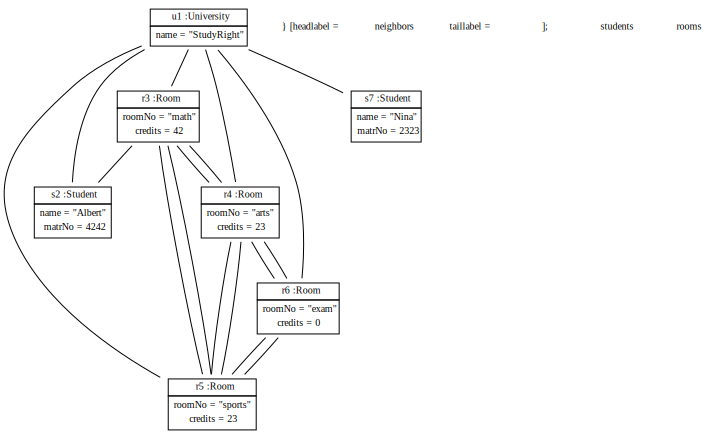

Scenario StudyRightObjectScenarios
Start situation: use University class to build object structure
step 1: dump object diagram
step 2: add support for path navigation
call
scenario.markCodeStart();
shall compute to 88
Path classes need to be generated.
step 3: call
scenario.markCodeStart();
System.out: math arts sports math sports arts